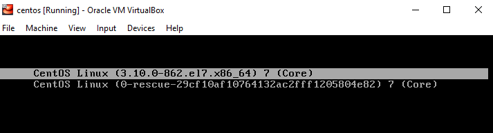
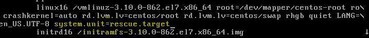

Check available target
#systemctl list-units --type=target
Check different type of unit configration file available
#systemctl -t help
#cd /usr/lib/systemd/system ==> We can see lot of unit configuration file.
#more sshd.services ==> unit configuration file of sshd
ExecStartPre -- Before service start execute this script
ExecStart -- upon starting execute this script
ExecReload - Reload the service
Depentancy on multi user target :-
#systemctl list-dependencies multi-user.target ==> this will list what and all services will call when system load multi user taget
Current target :-
# systemctl get-default
4 common targets :-
- Multi user target - multi user login.. Command text based
- Graphical.target - GUI based ( # systemctl list-dependencies graphical.target)
- Emergency.target - This will boot the system and mount root file system as read only file system.
- Rescue.target - Boot with single user environment with minimal loaded for troubleshooting
Move the target manually :-
#systemctl isolate multi-user.target ==> This will switch to multi-user target
#systemctl set-default multi-user.target ==> set the target permanently..need to reboot after change the new target.
#system
Configuration location :-
#cd /usr/lib/systemd/system/ ==> all of our system unit configuration file that ship with system.
#cd /etc/systemd/system ==> additional unit configuration by include program, customes services( apache,etc)
Boot with rescue mode :-
On grub configuration :-

Add systemd.unit=rescue.target
